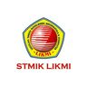
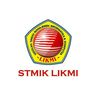

STMIK LIKMI

| 022-250-2121 |
| Info@Likmi.ac.id |
| 0817219966 @stmiklikmi |
STMIK LIKMI
School of Business & IT
MM LEARNING SYSTEM
September 15,2018/Facility/0 comment
PERKULIAHAN BERBASIS MULTIMEDIA
Keberhasilan suatu proses belajar-mengajar tidak hanya bergantung pada kehadiran mahasiswa, tetapi materi yang disampaikan oleh dosen juga perlu di pantau. Untuk melakukan kontrol terhadap materi tersebut, LIKMI mengembangkan perkuliahan di kelas menggunakanberbagai alat multimedia.seluruhmateri yang akan diajarkan dosen telah tersedia dalam bentuk digital.
Pada saat dosen menampilkan materi tersebut di layar melalui proyektor, komputer secara otomatis mencatat materi tersebut. dengan demikian dosen dapat melakukan review terhadap materi yang telah diberikan. disamping itu perkuliahan menggunakan teknologi multimedia ini lebih menarik karena dapat dilengkapi dengan klip video atau animasi yang menunjang, sehingga materi kuliah lebih mudah dipahami.
QUICK LINK
Penerimaan Mahasiswa Baru
Beasiswa
LIKMI CAREERT
LIKMI News
LIKMI E-Jurnal
LIKMI E-Brosur
RECENT POSTS
Phyton dan JavaScript : Apa
Perbedaan?
Intip Tren Rekrutmen Tahun 2023 yuk!
Kenalan dengan CV ATS Friendly!
Analisis Teknikal, Apa itu?
Tips Presentasi Yang Menarik dan Efektif,
Kamu Harus Baca!
STMIK LIKMI
Ir. H. Juanda No. 96
Indonesia
Telp : 022-250-2121
Fax : 022- 250-5151
QUICK LINK
Penerimaan Mahasiswa Baru
Beasiswa
LIKMI CAREERT
LIKMI News
LIKMI E-Jurnal
LIKMI E-Brosur
Our Social Media